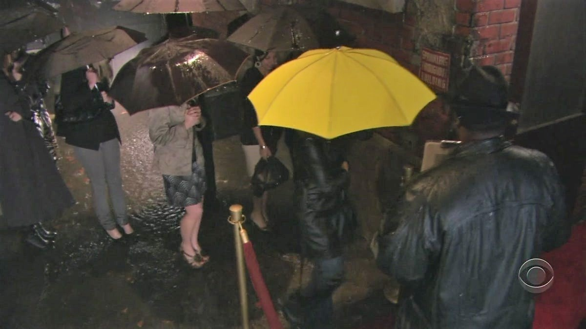
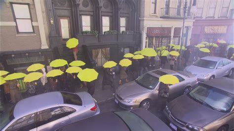
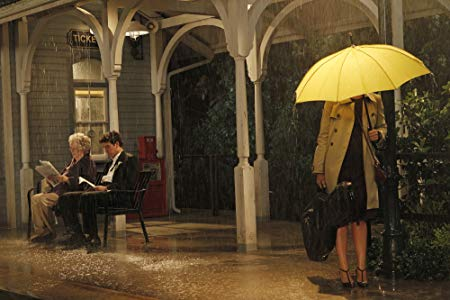

Yellow Umbrella
Pictures
  The story
The story of the Yellow Umbrella begins in the episode No Tomorrow. It was St. Patrick's Day and Barney and Ted went to a party, the mother was also at that party carrying the yellow umbrella with her at the entrance. After a wild night at the party, Ted got punched in the face for charging drinks to someone else's account. After that Ted tells Marshall what happened that night, and tells him that he forgot his phone, so Ted went back to the party to look for his phone but couldn't find it. He was just about to leave, but it was raining, so he went back in and found the yellow umbrella. He took the umbrella and left.
In Big Days, Ted is seen attending a wedding, which turns out to be Barney's, in 2013, after which he will meet the mother. As it rains, he tells Marshall that he didn't bring an umbrella, a reference to the mother's yellow umbrella he obtained years beforehand.
In No Pressure, after Ted gains closure with Robin, he walks outside to everyone outside with a yellow umbrella. This symbolises his opportunities after he gets over Robin.
Quotes
- "Somewhere out there's a yellow umbrella for everyone... you just be patient."
- "The great moments of your life won't necessarily be the things you do, they'll also be the things that happen to you."
- "When you meet the right person, you know it. You can't stop thinking about them. They are your best friend, and your soulmate. You can't wait to spend the rest of your life with them. No one and nothing else can compare."